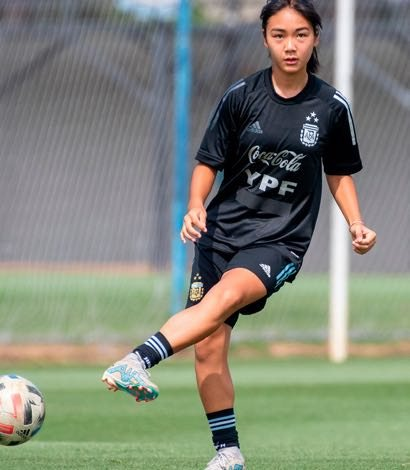
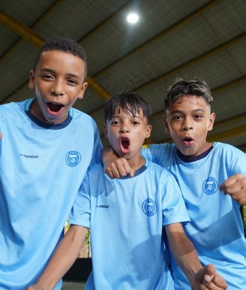

A PROGRAMME FOR EVERY STAGE OF THE JOURNEY
From first touch to elite performance — every programme is built on the same AFA-informed methodology, scaled to the player in front of us.
Feeder Centres
Community & grassroots, ages 6–12Grassroots football education delivered inside our feeder centres and community grounds — the entry point into the pathway.
Explore Feeder CentresIntermediate Centres
Ages 10–16Structured, AFA-certified coaching with formal development contracts for selected players.
Explore Intermediate CentresCentre of Excellence
Ages 14–19, elite trackOur flagship performance environment — full-time training, sports science and international exposure.
Explore Centre of ExcellenceBeti Khilao — Vision 2031
All agesA dedicated development pathway building toward the FIFA Women's World Cup — from first touch to elite performance.
Learn MoreSchool & Institutional Partnerships
Schools, universities & clubsCurriculum integration, coach education and talent pipelines built in partnership with academic institutions.
Partner With UsTrials, Camps & Talent ID
Open trials & selective campsData-driven scouting and open trial pathways that give every player, anywhere, a chance to be seen.
Find a TrialFEEDER CENTRES → INTERMEDIATE CENTRES → CENTRE OF EXCELLENCE
Progression is based on performance and development — never tenure, background or geography.
Feeder Centres
Community & GrassrootsThe widest part of the pyramid. Every child who touches a ball at one of our feeder centres or community programmes is a possibility worth watching.
- Introduction to ball mastery & movement
- Football as habit, discipline and joy
- First exposure to structured coaching
Intermediate Centres
Structured AcademyWhere promise becomes a pathway. Players train under AFA-certified coaches, many for the first time under a formal development contract.
- Technical & tactical curriculum build-up
- Competitive league & tournament exposure
- Individual development plans begin
Centre of Excellence
Flagship DestinationWhere India meets the world. Full-time coaching, sports science, education and international exposure inside our flagship Centre of Excellence.
- Full-time elite training environment
- Sports science, psychology & nutrition support
- International exposure across South America, Africa, Europe and North America
BUILDING TOWARD THE FIFA WOMEN'S WORLD CUP
Beti Khilao is a dedicated development track — from grassroots participation through to elite pathways, mirroring the same Feeder Centres → Intermediate Centres → Centre of Excellence structure, built with one long-term ambition: Indian talent ready for the FIFA Women's World Cup by 2031.


CURRICULUM, COACHING & TALENT PIPELINES
Partner with us to integrate structured football coaching, run seminars, and build talent pipelines from the classroom to the pitch — for schools, colleges and universities.
MERIT, NOT GEOGRAPHY, DETERMINES WHO GETS SEEN
Scouting combines modern data analytics with traditional talent identification — so a talented child in a small town or village is no longer invisible.
Match footage feeds an athlete performance profile — tracking markers like passing accuracy, speed and positioning over time.
FIND THE RIGHT PROGRAMME FOR YOUR PLAYER
Our team will help you identify the right entry point into the pathway.